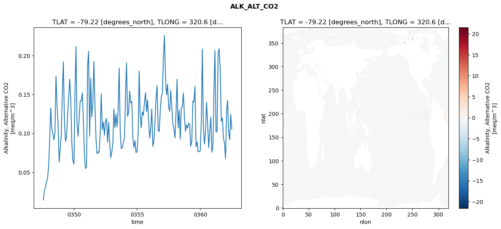
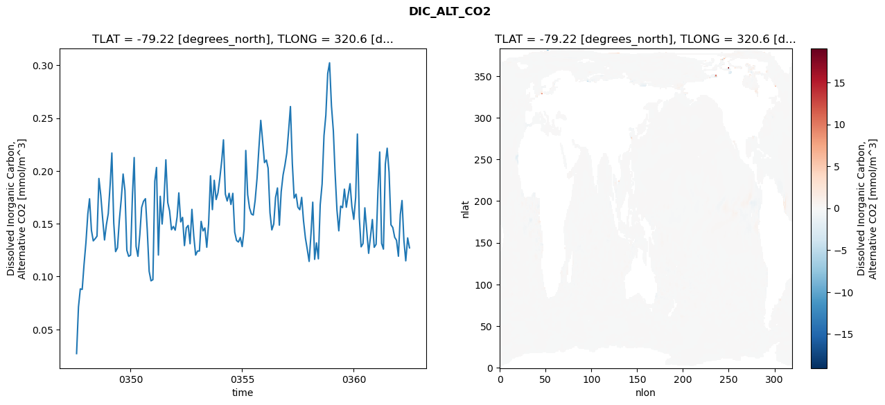
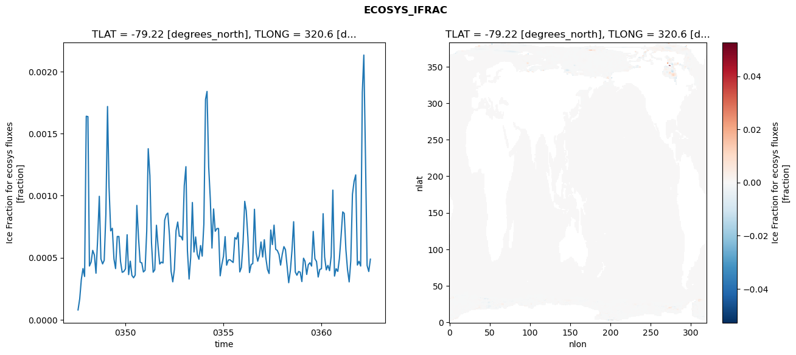
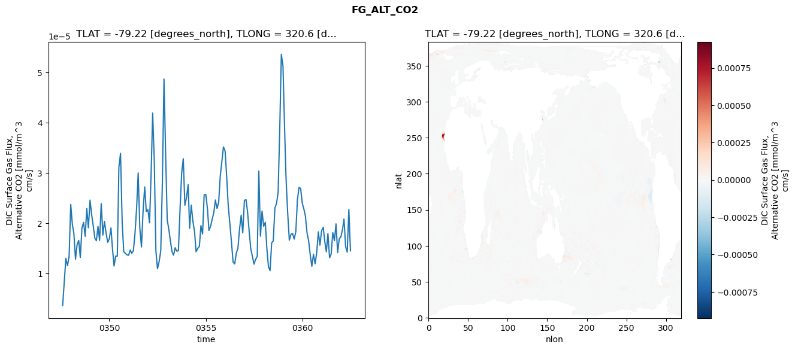

glb-dor_North_Atlantic_basin_000_1999-07-01_00002#
Show code cell source Hide code cell source
import xarray as xr
import matplotlib.pyplot as plt
Show code cell source Hide code cell source
zarr_store = "/path/to/zarr/store"
# Parameters
zarr_store = "/global/cfs/projectdirs/m4746/Projects/Ocean-CDR-Atlas-v0/data/validation/smyle.cdr-atlas-v0.glb-dor_North_Atlantic_basin_000_1999-07-01_00002.001.validation.zarr"
Show code cell source Hide code cell source
%%time
ds_o = xr.open_zarr(zarr_store).compute()
ds_o
CPU times: user 671 ms, sys: 445 ms, total: 1.12 s
Wall time: 1.28 s
<xarray.Dataset> Size: 2MB
Dimensions: (nlat: 384, nlon: 320, time: 180)
Coordinates:
TLAT float64 8B -79.22
TLONG float64 8B 320.6
ULAT float64 8B -78.95
ULONG float64 8B 321.1
* time (time) object 1kB 0347-08-01 00:00:00 ... 0362-07-01 0...
z_t float32 4B 500.0
Dimensions without coordinates: nlat, nlon
Data variables:
ALK_ALT_CO2_diff (nlat, nlon) float32 492kB nan nan nan ... nan nan nan
ALK_ALT_CO2_rmse (time) float64 1kB 0.01429 0.02644 ... 0.1243 0.1054
DIC_ALT_CO2_diff (nlat, nlon) float32 492kB nan nan nan ... nan nan nan
DIC_ALT_CO2_rmse (time) float64 1kB 0.02711 0.07119 ... 0.1366 0.1272
ECOSYS_IFRAC_diff (nlat, nlon) float32 492kB nan nan nan ... nan nan nan
ECOSYS_IFRAC_rmse (time) float64 1kB 7.87e-05 0.0001677 ... 0.000488
FG_ALT_CO2_diff (nlat, nlon) float32 492kB nan nan nan ... nan nan nan
FG_ALT_CO2_rmse (time) float64 1kB 3.599e-06 8.419e-06 ... 1.448e-05xarray.Dataset
- nlat: 384
- nlon: 320
- time: 180
- TLAT()float64-79.22
- long_name :
- array of t-grid latitudes
- units :
- degrees_north
array(-79.22052261)
- TLONG()float64320.6
- long_name :
- array of t-grid longitudes
- units :
- degrees_east
array(320.56250892)
- ULAT()float64-78.95
- long_name :
- array of u-grid latitudes
- units :
- degrees_north
array(-78.95289509)
- ULONG()float64321.1
- long_name :
- array of u-grid longitudes
- units :
- degrees_east
array(321.12500894)
- time(time)object0347-08-01 00:00:00 ... 0362-07-...
- bounds :
- time_bound
- long_name :
- time
array([cftime.DatetimeNoLeap(347, 8, 1, 0, 0, 0, 0, has_year_zero=True), cftime.DatetimeNoLeap(347, 9, 1, 0, 0, 0, 0, has_year_zero=True), cftime.DatetimeNoLeap(347, 10, 1, 0, 0, 0, 0, has_year_zero=True), cftime.DatetimeNoLeap(347, 11, 1, 0, 0, 0, 0, has_year_zero=True), cftime.DatetimeNoLeap(347, 12, 1, 0, 0, 0, 0, has_year_zero=True), cftime.DatetimeNoLeap(348, 1, 1, 0, 0, 0, 0, has_year_zero=True), cftime.DatetimeNoLeap(348, 2, 1, 0, 0, 0, 0, has_year_zero=True), cftime.DatetimeNoLeap(348, 3, 1, 0, 0, 0, 0, has_year_zero=True), cftime.DatetimeNoLeap(348, 4, 1, 0, 0, 0, 0, has_year_zero=True), cftime.DatetimeNoLeap(348, 5, 1, 0, 0, 0, 0, has_year_zero=True), cftime.DatetimeNoLeap(348, 6, 1, 0, 0, 0, 0, has_year_zero=True), cftime.DatetimeNoLeap(348, 7, 1, 0, 0, 0, 0, has_year_zero=True), cftime.DatetimeNoLeap(348, 8, 1, 0, 0, 0, 0, has_year_zero=True), cftime.DatetimeNoLeap(348, 9, 1, 0, 0, 0, 0, has_year_zero=True), cftime.DatetimeNoLeap(348, 10, 1, 0, 0, 0, 0, has_year_zero=True), cftime.DatetimeNoLeap(348, 11, 1, 0, 0, 0, 0, has_year_zero=True), cftime.DatetimeNoLeap(348, 12, 1, 0, 0, 0, 0, has_year_zero=True), cftime.DatetimeNoLeap(349, 1, 1, 0, 0, 0, 0, has_year_zero=True), cftime.DatetimeNoLeap(349, 2, 1, 0, 0, 0, 0, has_year_zero=True), cftime.DatetimeNoLeap(349, 3, 1, 0, 0, 0, 0, has_year_zero=True), cftime.DatetimeNoLeap(349, 4, 1, 0, 0, 0, 0, has_year_zero=True), cftime.DatetimeNoLeap(349, 5, 1, 0, 0, 0, 0, has_year_zero=True), cftime.DatetimeNoLeap(349, 6, 1, 0, 0, 0, 0, has_year_zero=True), cftime.DatetimeNoLeap(349, 7, 1, 0, 0, 0, 0, has_year_zero=True), cftime.DatetimeNoLeap(349, 8, 1, 0, 0, 0, 0, has_year_zero=True), cftime.DatetimeNoLeap(349, 9, 1, 0, 0, 0, 0, has_year_zero=True), cftime.DatetimeNoLeap(349, 10, 1, 0, 0, 0, 0, has_year_zero=True), cftime.DatetimeNoLeap(349, 11, 1, 0, 0, 0, 0, has_year_zero=True), cftime.DatetimeNoLeap(349, 12, 1, 0, 0, 0, 0, has_year_zero=True), cftime.DatetimeNoLeap(350, 1, 1, 0, 0, 0, 0, has_year_zero=True), cftime.DatetimeNoLeap(350, 2, 1, 0, 0, 0, 0, has_year_zero=True), cftime.DatetimeNoLeap(350, 3, 1, 0, 0, 0, 0, has_year_zero=True), cftime.DatetimeNoLeap(350, 4, 1, 0, 0, 0, 0, has_year_zero=True), cftime.DatetimeNoLeap(350, 5, 1, 0, 0, 0, 0, has_year_zero=True), cftime.DatetimeNoLeap(350, 6, 1, 0, 0, 0, 0, has_year_zero=True), cftime.DatetimeNoLeap(350, 7, 1, 0, 0, 0, 0, has_year_zero=True), cftime.DatetimeNoLeap(350, 8, 1, 0, 0, 0, 0, has_year_zero=True), cftime.DatetimeNoLeap(350, 9, 1, 0, 0, 0, 0, has_year_zero=True), cftime.DatetimeNoLeap(350, 10, 1, 0, 0, 0, 0, has_year_zero=True), cftime.DatetimeNoLeap(350, 11, 1, 0, 0, 0, 0, has_year_zero=True), cftime.DatetimeNoLeap(350, 12, 1, 0, 0, 0, 0, has_year_zero=True), cftime.DatetimeNoLeap(351, 1, 1, 0, 0, 0, 0, has_year_zero=True), cftime.DatetimeNoLeap(351, 2, 1, 0, 0, 0, 0, has_year_zero=True), cftime.DatetimeNoLeap(351, 3, 1, 0, 0, 0, 0, has_year_zero=True), cftime.DatetimeNoLeap(351, 4, 1, 0, 0, 0, 0, has_year_zero=True), cftime.DatetimeNoLeap(351, 5, 1, 0, 0, 0, 0, has_year_zero=True), cftime.DatetimeNoLeap(351, 6, 1, 0, 0, 0, 0, has_year_zero=True), cftime.DatetimeNoLeap(351, 7, 1, 0, 0, 0, 0, has_year_zero=True), cftime.DatetimeNoLeap(351, 8, 1, 0, 0, 0, 0, has_year_zero=True), cftime.DatetimeNoLeap(351, 9, 1, 0, 0, 0, 0, has_year_zero=True), cftime.DatetimeNoLeap(351, 10, 1, 0, 0, 0, 0, has_year_zero=True), cftime.DatetimeNoLeap(351, 11, 1, 0, 0, 0, 0, has_year_zero=True), cftime.DatetimeNoLeap(351, 12, 1, 0, 0, 0, 0, has_year_zero=True), cftime.DatetimeNoLeap(352, 1, 1, 0, 0, 0, 0, has_year_zero=True), cftime.DatetimeNoLeap(352, 2, 1, 0, 0, 0, 0, has_year_zero=True), cftime.DatetimeNoLeap(352, 3, 1, 0, 0, 0, 0, has_year_zero=True), cftime.DatetimeNoLeap(352, 4, 1, 0, 0, 0, 0, has_year_zero=True), cftime.DatetimeNoLeap(352, 5, 1, 0, 0, 0, 0, has_year_zero=True), cftime.DatetimeNoLeap(352, 6, 1, 0, 0, 0, 0, has_year_zero=True), cftime.DatetimeNoLeap(352, 7, 1, 0, 0, 0, 0, has_year_zero=True), cftime.DatetimeNoLeap(352, 8, 1, 0, 0, 0, 0, has_year_zero=True), cftime.DatetimeNoLeap(352, 9, 1, 0, 0, 0, 0, has_year_zero=True), cftime.DatetimeNoLeap(352, 10, 1, 0, 0, 0, 0, has_year_zero=True), cftime.DatetimeNoLeap(352, 11, 1, 0, 0, 0, 0, has_year_zero=True), cftime.DatetimeNoLeap(352, 12, 1, 0, 0, 0, 0, has_year_zero=True), cftime.DatetimeNoLeap(353, 1, 1, 0, 0, 0, 0, has_year_zero=True), cftime.DatetimeNoLeap(353, 2, 1, 0, 0, 0, 0, has_year_zero=True), cftime.DatetimeNoLeap(353, 3, 1, 0, 0, 0, 0, has_year_zero=True), cftime.DatetimeNoLeap(353, 4, 1, 0, 0, 0, 0, has_year_zero=True), cftime.DatetimeNoLeap(353, 5, 1, 0, 0, 0, 0, has_year_zero=True), cftime.DatetimeNoLeap(353, 6, 1, 0, 0, 0, 0, has_year_zero=True), cftime.DatetimeNoLeap(353, 7, 1, 0, 0, 0, 0, has_year_zero=True), cftime.DatetimeNoLeap(353, 8, 1, 0, 0, 0, 0, has_year_zero=True), cftime.DatetimeNoLeap(353, 9, 1, 0, 0, 0, 0, has_year_zero=True), cftime.DatetimeNoLeap(353, 10, 1, 0, 0, 0, 0, has_year_zero=True), cftime.DatetimeNoLeap(353, 11, 1, 0, 0, 0, 0, has_year_zero=True), cftime.DatetimeNoLeap(353, 12, 1, 0, 0, 0, 0, has_year_zero=True), cftime.DatetimeNoLeap(354, 1, 1, 0, 0, 0, 0, has_year_zero=True), cftime.DatetimeNoLeap(354, 2, 1, 0, 0, 0, 0, has_year_zero=True), cftime.DatetimeNoLeap(354, 3, 1, 0, 0, 0, 0, has_year_zero=True), cftime.DatetimeNoLeap(354, 4, 1, 0, 0, 0, 0, has_year_zero=True), cftime.DatetimeNoLeap(354, 5, 1, 0, 0, 0, 0, has_year_zero=True), cftime.DatetimeNoLeap(354, 6, 1, 0, 0, 0, 0, has_year_zero=True), cftime.DatetimeNoLeap(354, 7, 1, 0, 0, 0, 0, has_year_zero=True), cftime.DatetimeNoLeap(354, 8, 1, 0, 0, 0, 0, has_year_zero=True), cftime.DatetimeNoLeap(354, 9, 1, 0, 0, 0, 0, has_year_zero=True), cftime.DatetimeNoLeap(354, 10, 1, 0, 0, 0, 0, has_year_zero=True), cftime.DatetimeNoLeap(354, 11, 1, 0, 0, 0, 0, has_year_zero=True), cftime.DatetimeNoLeap(354, 12, 1, 0, 0, 0, 0, has_year_zero=True), cftime.DatetimeNoLeap(355, 1, 1, 0, 0, 0, 0, has_year_zero=True), cftime.DatetimeNoLeap(355, 2, 1, 0, 0, 0, 0, has_year_zero=True), cftime.DatetimeNoLeap(355, 3, 1, 0, 0, 0, 0, has_year_zero=True), cftime.DatetimeNoLeap(355, 4, 1, 0, 0, 0, 0, has_year_zero=True), cftime.DatetimeNoLeap(355, 5, 1, 0, 0, 0, 0, has_year_zero=True), cftime.DatetimeNoLeap(355, 6, 1, 0, 0, 0, 0, has_year_zero=True), cftime.DatetimeNoLeap(355, 7, 1, 0, 0, 0, 0, has_year_zero=True), cftime.DatetimeNoLeap(355, 8, 1, 0, 0, 0, 0, has_year_zero=True), cftime.DatetimeNoLeap(355, 9, 1, 0, 0, 0, 0, has_year_zero=True), cftime.DatetimeNoLeap(355, 10, 1, 0, 0, 0, 0, has_year_zero=True), cftime.DatetimeNoLeap(355, 11, 1, 0, 0, 0, 0, has_year_zero=True), cftime.DatetimeNoLeap(355, 12, 1, 0, 0, 0, 0, has_year_zero=True), cftime.DatetimeNoLeap(356, 1, 1, 0, 0, 0, 0, has_year_zero=True), cftime.DatetimeNoLeap(356, 2, 1, 0, 0, 0, 0, has_year_zero=True), cftime.DatetimeNoLeap(356, 3, 1, 0, 0, 0, 0, has_year_zero=True), cftime.DatetimeNoLeap(356, 4, 1, 0, 0, 0, 0, has_year_zero=True), cftime.DatetimeNoLeap(356, 5, 1, 0, 0, 0, 0, has_year_zero=True), cftime.DatetimeNoLeap(356, 6, 1, 0, 0, 0, 0, has_year_zero=True), cftime.DatetimeNoLeap(356, 7, 1, 0, 0, 0, 0, has_year_zero=True), cftime.DatetimeNoLeap(356, 8, 1, 0, 0, 0, 0, has_year_zero=True), cftime.DatetimeNoLeap(356, 9, 1, 0, 0, 0, 0, has_year_zero=True), cftime.DatetimeNoLeap(356, 10, 1, 0, 0, 0, 0, has_year_zero=True), cftime.DatetimeNoLeap(356, 11, 1, 0, 0, 0, 0, has_year_zero=True), cftime.DatetimeNoLeap(356, 12, 1, 0, 0, 0, 0, has_year_zero=True), cftime.DatetimeNoLeap(357, 1, 1, 0, 0, 0, 0, has_year_zero=True), cftime.DatetimeNoLeap(357, 2, 1, 0, 0, 0, 0, has_year_zero=True), cftime.DatetimeNoLeap(357, 3, 1, 0, 0, 0, 0, has_year_zero=True), cftime.DatetimeNoLeap(357, 4, 1, 0, 0, 0, 0, has_year_zero=True), cftime.DatetimeNoLeap(357, 5, 1, 0, 0, 0, 0, has_year_zero=True), cftime.DatetimeNoLeap(357, 6, 1, 0, 0, 0, 0, has_year_zero=True), cftime.DatetimeNoLeap(357, 7, 1, 0, 0, 0, 0, has_year_zero=True), cftime.DatetimeNoLeap(357, 8, 1, 0, 0, 0, 0, has_year_zero=True), cftime.DatetimeNoLeap(357, 9, 1, 0, 0, 0, 0, has_year_zero=True), cftime.DatetimeNoLeap(357, 10, 1, 0, 0, 0, 0, has_year_zero=True), cftime.DatetimeNoLeap(357, 11, 1, 0, 0, 0, 0, has_year_zero=True), cftime.DatetimeNoLeap(357, 12, 1, 0, 0, 0, 0, has_year_zero=True), cftime.DatetimeNoLeap(358, 1, 1, 0, 0, 0, 0, has_year_zero=True), cftime.DatetimeNoLeap(358, 2, 1, 0, 0, 0, 0, has_year_zero=True), cftime.DatetimeNoLeap(358, 3, 1, 0, 0, 0, 0, has_year_zero=True), cftime.DatetimeNoLeap(358, 4, 1, 0, 0, 0, 0, has_year_zero=True), cftime.DatetimeNoLeap(358, 5, 1, 0, 0, 0, 0, has_year_zero=True), cftime.DatetimeNoLeap(358, 6, 1, 0, 0, 0, 0, has_year_zero=True), cftime.DatetimeNoLeap(358, 7, 1, 0, 0, 0, 0, has_year_zero=True), cftime.DatetimeNoLeap(358, 8, 1, 0, 0, 0, 0, has_year_zero=True), cftime.DatetimeNoLeap(358, 9, 1, 0, 0, 0, 0, has_year_zero=True), cftime.DatetimeNoLeap(358, 10, 1, 0, 0, 0, 0, has_year_zero=True), cftime.DatetimeNoLeap(358, 11, 1, 0, 0, 0, 0, has_year_zero=True), cftime.DatetimeNoLeap(358, 12, 1, 0, 0, 0, 0, has_year_zero=True), cftime.DatetimeNoLeap(359, 1, 1, 0, 0, 0, 0, has_year_zero=True), cftime.DatetimeNoLeap(359, 2, 1, 0, 0, 0, 0, has_year_zero=True), cftime.DatetimeNoLeap(359, 3, 1, 0, 0, 0, 0, has_year_zero=True), cftime.DatetimeNoLeap(359, 4, 1, 0, 0, 0, 0, has_year_zero=True), cftime.DatetimeNoLeap(359, 5, 1, 0, 0, 0, 0, has_year_zero=True), cftime.DatetimeNoLeap(359, 6, 1, 0, 0, 0, 0, has_year_zero=True), cftime.DatetimeNoLeap(359, 7, 1, 0, 0, 0, 0, has_year_zero=True), cftime.DatetimeNoLeap(359, 8, 1, 0, 0, 0, 0, has_year_zero=True), cftime.DatetimeNoLeap(359, 9, 1, 0, 0, 0, 0, has_year_zero=True), cftime.DatetimeNoLeap(359, 10, 1, 0, 0, 0, 0, has_year_zero=True), cftime.DatetimeNoLeap(359, 11, 1, 0, 0, 0, 0, has_year_zero=True), cftime.DatetimeNoLeap(359, 12, 1, 0, 0, 0, 0, has_year_zero=True), cftime.DatetimeNoLeap(360, 1, 1, 0, 0, 0, 0, has_year_zero=True), cftime.DatetimeNoLeap(360, 2, 1, 0, 0, 0, 0, has_year_zero=True), cftime.DatetimeNoLeap(360, 3, 1, 0, 0, 0, 0, has_year_zero=True), cftime.DatetimeNoLeap(360, 4, 1, 0, 0, 0, 0, has_year_zero=True), cftime.DatetimeNoLeap(360, 5, 1, 0, 0, 0, 0, has_year_zero=True), cftime.DatetimeNoLeap(360, 6, 1, 0, 0, 0, 0, has_year_zero=True), cftime.DatetimeNoLeap(360, 7, 1, 0, 0, 0, 0, has_year_zero=True), cftime.DatetimeNoLeap(360, 8, 1, 0, 0, 0, 0, has_year_zero=True), cftime.DatetimeNoLeap(360, 9, 1, 0, 0, 0, 0, has_year_zero=True), cftime.DatetimeNoLeap(360, 10, 1, 0, 0, 0, 0, has_year_zero=True), cftime.DatetimeNoLeap(360, 11, 1, 0, 0, 0, 0, has_year_zero=True), cftime.DatetimeNoLeap(360, 12, 1, 0, 0, 0, 0, has_year_zero=True), cftime.DatetimeNoLeap(361, 1, 1, 0, 0, 0, 0, has_year_zero=True), cftime.DatetimeNoLeap(361, 2, 1, 0, 0, 0, 0, has_year_zero=True), cftime.DatetimeNoLeap(361, 3, 1, 0, 0, 0, 0, has_year_zero=True), cftime.DatetimeNoLeap(361, 4, 1, 0, 0, 0, 0, has_year_zero=True), cftime.DatetimeNoLeap(361, 5, 1, 0, 0, 0, 0, has_year_zero=True), cftime.DatetimeNoLeap(361, 6, 1, 0, 0, 0, 0, has_year_zero=True), cftime.DatetimeNoLeap(361, 7, 1, 0, 0, 0, 0, has_year_zero=True), cftime.DatetimeNoLeap(361, 8, 1, 0, 0, 0, 0, has_year_zero=True), cftime.DatetimeNoLeap(361, 9, 1, 0, 0, 0, 0, has_year_zero=True), cftime.DatetimeNoLeap(361, 10, 1, 0, 0, 0, 0, has_year_zero=True), cftime.DatetimeNoLeap(361, 11, 1, 0, 0, 0, 0, has_year_zero=True), cftime.DatetimeNoLeap(361, 12, 1, 0, 0, 0, 0, has_year_zero=True), cftime.DatetimeNoLeap(362, 1, 1, 0, 0, 0, 0, has_year_zero=True), cftime.DatetimeNoLeap(362, 2, 1, 0, 0, 0, 0, has_year_zero=True), cftime.DatetimeNoLeap(362, 3, 1, 0, 0, 0, 0, has_year_zero=True), cftime.DatetimeNoLeap(362, 4, 1, 0, 0, 0, 0, has_year_zero=True), cftime.DatetimeNoLeap(362, 5, 1, 0, 0, 0, 0, has_year_zero=True), cftime.DatetimeNoLeap(362, 6, 1, 0, 0, 0, 0, has_year_zero=True), cftime.DatetimeNoLeap(362, 7, 1, 0, 0, 0, 0, has_year_zero=True)], dtype=object) - z_t()float32500.0
- long_name :
- depth from surface to midpoint of layer
- positive :
- down
- units :
- centimeters
- valid_max :
- 537500.0
- valid_min :
- 500.0
array(500., dtype=float32)
- ALK_ALT_CO2_diff(nlat, nlon)float32nan nan nan nan ... nan nan nan nan
- cell_methods :
- time: mean
- grid_loc :
- 3111
- long_name :
- Alkalinity, Alternative CO2
- units :
- meq/m^3
array([[ nan, nan, nan, ..., nan, nan, nan], [ nan, nan, nan, ..., nan, nan, nan], [0.01245117, 0.00366211, 0.01342773, ..., nan, nan, nan], ..., [ nan, nan, nan, ..., nan, nan, nan], [ nan, nan, nan, ..., nan, nan, nan], [ nan, nan, nan, ..., nan, nan, nan]], dtype=float32) - ALK_ALT_CO2_rmse(time)float640.01429 0.02644 ... 0.1243 0.1054
- cell_methods :
- time: mean
- grid_loc :
- 3111
- long_name :
- Alkalinity, Alternative CO2
- units :
- meq/m^3
array([0.01428572, 0.02643533, 0.0311664 , 0.03802091, 0.04225707, 0.05846074, 0.09406843, 0.1326555 , 0.10671724, 0.09961738, 0.09176978, 0.10019258, 0.17379191, 0.1358675 , 0.11081334, 0.06309781, 0.08089558, 0.09862282, 0.15255623, 0.19218976, 0.11913212, 0.08988529, 0.09487321, 0.12284215, 0.14482409, 0.16990526, 0.1449536 , 0.08756721, 0.06544985, 0.06034181, 0.15444285, 0.21140862, 0.11219325, 0.09603545, 0.11930765, 0.14186481, 0.14157199, 0.15217065, 0.11620746, 0.07249954, 0.05449905, 0.05707287, 0.1874647 , 0.20577921, 0.09628703, 0.17128068, 0.12112061, 0.13833388, 0.19277564, 0.13511466, 0.09274703, 0.07366991, 0.07631812, 0.07538308, 0.10394232, 0.15080785, 0.10457922, 0.11446583, 0.09755135, 0.11539962, 0.11921464, 0.08858183, 0.11421544, 0.08748904, 0.06884249, 0.07619742, 0.08806074, 0.13140275, 0.10723248, 0.12458736, 0.10833483, 0.12874336, 0.18425723, 0.10169328, 0.08028592, 0.08195984, 0.08826858, 0.0948001 , 0.14984665, 0.19087909, 0.12188369, 0.12707312, 0.15438384, 0.13913216, 0.14105331, 0.09383972, 0.08176663, 0.09080455, 0.07528195, 0.07653409, 0.10163256, 0.18042831, 0.12373886, 0.1069875 , 0.12780029, 0.12332773, 0.1391695 , 0.15236848, 0.12814899, 0.14294871, 0.11387968, 0.09378527, 0.10744113, 0.13144227, 0.08318504, 0.09106428, 0.11375406, 0.14483397, 0.16134583, 0.10404945, 0.10217258, 0.12885197, 0.14687507, 0.15178528, 0.19691254, 0.22597647, 0.17308113, 0.14944762, 0.1631814 , 0.13411561, 0.1282885 , 0.15528099, 0.13309802, 0.11086459, 0.1065135 , 0.09401589, 0.12842528, 0.16972459, 0.1070264 , 0.12992913, 0.09273296, 0.13297946, 0.13408566, 0.15168182, 0.1209139 , 0.10261065, 0.11099126, 0.10663801, 0.11318664, 0.11126442, 0.08336516, 0.08926235, 0.14147351, 0.14013725, 0.16066856, 0.08269201, 0.08889571, 0.07626929, 0.07665306, 0.07738361, 0.11618433, 0.20872088, 0.10841564, 0.08611872, 0.10114888, 0.1401565 , 0.11332386, 0.08166832, 0.10185494, 0.12102714, 0.0757055 , 0.08257421, 0.15772377, 0.20662488, 0.10138987, 0.1032371 , 0.20352043, 0.20900503, 0.18069471, 0.11568349, 0.11984274, 0.09403894, 0.08735883, 0.06751854, 0.12914555, 0.14241578, 0.1007611 , 0.09163973, 0.12430738, 0.10538216]) - DIC_ALT_CO2_diff(nlat, nlon)float32nan nan nan nan ... nan nan nan nan
- cell_methods :
- time: mean
- grid_loc :
- 3111
- long_name :
- Dissolved Inorganic Carbon, Alternative CO2
- units :
- mmol/m^3
array([[ nan, nan, nan, ..., nan, nan, nan], [ nan, nan, nan, ..., nan, nan, nan], [-0.00415039, -0.00756836, -0.00317383, ..., nan, nan, nan], ..., [ nan, nan, nan, ..., nan, nan, nan], [ nan, nan, nan, ..., nan, nan, nan], [ nan, nan, nan, ..., nan, nan, nan]], dtype=float32) - DIC_ALT_CO2_rmse(time)float640.02711 0.07119 ... 0.1366 0.1272
- cell_methods :
- time: mean
- grid_loc :
- 3111
- long_name :
- Dissolved Inorganic Carbon, Alternative CO2
- units :
- mmol/m^3
array([0.0271142 , 0.07118694, 0.08834657, 0.08785616, 0.11138042, 0.1321679 , 0.15935238, 0.17361776, 0.14368466, 0.13378327, 0.13586341, 0.13821518, 0.19284733, 0.1766757 , 0.15511522, 0.13464439, 0.14883229, 0.15956581, 0.18708246, 0.2169281 , 0.15076741, 0.12360877, 0.12722464, 0.15325153, 0.17297854, 0.19703391, 0.18136712, 0.12485366, 0.11915206, 0.12028118, 0.17758752, 0.21264653, 0.1285585 , 0.11918071, 0.13958793, 0.16539006, 0.17129537, 0.1736923 , 0.14382402, 0.10493916, 0.09597433, 0.09706743, 0.19029679, 0.20322218, 0.1203621 , 0.17592712, 0.14971851, 0.17189217, 0.21048469, 0.17000694, 0.16207973, 0.14435624, 0.14741359, 0.14389548, 0.15652736, 0.17919202, 0.15172121, 0.15601657, 0.129316 , 0.14613851, 0.1483937 , 0.13106989, 0.16359442, 0.13814061, 0.12032537, 0.12418375, 0.12413682, 0.15222246, 0.14319739, 0.14602501, 0.12774929, 0.1498459 , 0.19535555, 0.16336314, 0.19111619, 0.17289614, 0.17924644, 0.19329978, 0.20993099, 0.22937057, 0.17808993, 0.17152146, 0.17883642, 0.16824514, 0.17875211, 0.14201098, 0.13410258, 0.13268741, 0.13695203, 0.12837078, 0.14424973, 0.21932982, 0.17748156, 0.16497481, 0.1591708 , 0.15823717, 0.17214345, 0.19300133, 0.2211445 , 0.24781303, 0.22859036, 0.20786229, 0.21026323, 0.20259113, 0.16035316, 0.14414524, 0.14960054, 0.17489838, 0.18384762, 0.1486271 , 0.18028917, 0.19621489, 0.20536445, 0.21711816, 0.23910796, 0.26091394, 0.20716016, 0.17432895, 0.17800743, 0.16563927, 0.16327538, 0.17494368, 0.15284982, 0.13652332, 0.12594834, 0.11435574, 0.14096408, 0.17039319, 0.11630288, 0.13184193, 0.11678497, 0.1679793 , 0.18758601, 0.23348677, 0.25267862, 0.29222423, 0.30230401, 0.26161895, 0.23778256, 0.19853938, 0.16288413, 0.1432979 , 0.16665484, 0.16525967, 0.18273596, 0.16559942, 0.17725893, 0.18787825, 0.16620814, 0.15420416, 0.17489086, 0.23488276, 0.15612656, 0.12812756, 0.13125202, 0.16504708, 0.14368348, 0.12201249, 0.13760655, 0.15398193, 0.12768788, 0.13054156, 0.18234253, 0.21790646, 0.13135484, 0.12600013, 0.20638006, 0.22147336, 0.19879143, 0.14898046, 0.14642209, 0.13717002, 0.13430594, 0.11924897, 0.15880113, 0.17196912, 0.13410745, 0.11489727, 0.13656989, 0.1271765 ]) - ECOSYS_IFRAC_diff(nlat, nlon)float32nan nan nan nan ... nan nan nan nan
- cell_methods :
- time: mean
- grid_loc :
- 2110
- long_name :
- Ice Fraction for ecosys fluxes
- units :
- fraction
array([[ nan, nan, nan, ..., nan, nan, nan], [ nan, nan, nan, ..., nan, nan, nan], [1.8715858e-05, 3.2663345e-05, 2.8729439e-05, ..., nan, nan, nan], ..., [ nan, nan, nan, ..., nan, nan, nan], [ nan, nan, nan, ..., nan, nan, nan], [ nan, nan, nan, ..., nan, nan, nan]], dtype=float32) - ECOSYS_IFRAC_rmse(time)float647.87e-05 0.0001677 ... 0.000488
- cell_methods :
- time: mean
- grid_loc :
- 2110
- long_name :
- Ice Fraction for ecosys fluxes
- units :
- fraction
array([7.87042779e-05, 1.67709290e-04, 3.23926619e-04, 4.12364270e-04, 3.48301992e-04, 1.64036991e-03, 1.63708556e-03, 4.32594332e-04, 4.64459312e-04, 5.58749106e-04, 5.22627170e-04, 3.74679172e-04, 6.47713068e-04, 9.94628624e-04, 4.90234739e-04, 4.49757385e-04, 4.78079951e-04, 8.49839928e-04, 1.71859551e-03, 1.07022046e-03, 7.16131935e-04, 7.37086650e-04, 4.88688848e-04, 4.12035012e-04, 6.70705753e-04, 6.70710820e-04, 4.69739401e-04, 3.82051984e-04, 3.88314446e-04, 4.09825979e-04, 6.84849648e-04, 3.63588520e-04, 4.71538675e-04, 3.57055751e-04, 3.38093666e-04, 3.59252853e-04, 9.21460328e-04, 6.60987256e-04, 4.63577967e-04, 4.57872624e-04, 3.84812681e-04, 3.98387319e-04, 7.14521930e-04, 1.37842022e-03, 1.16099519e-03, 6.18926047e-04, 3.82778181e-04, 4.02795767e-04, 7.61231267e-04, 5.87604480e-04, 4.48876005e-04, 4.64294000e-04, 4.57112348e-04, 8.02259495e-04, 8.47569882e-04, 8.59249389e-04, 6.77621574e-04, 3.89713791e-04, 3.05219007e-04, 4.05509466e-04, 7.17290627e-04, 7.87326579e-04, 6.72854018e-04, 6.71627507e-04, 6.42293136e-04, 1.08105198e-03, 1.23367966e-03, 5.55687531e-04, 3.27867580e-04, 5.02088110e-04, 9.44905605e-04, 5.45745418e-04, 6.67175334e-04, 5.26659008e-04, 4.87247530e-04, 5.97608694e-04, 5.12521829e-04, 7.71178512e-04, 1.77564067e-03, 1.84007990e-03, ... 4.21408218e-04, 6.21423342e-04, 9.54109522e-04, 8.77817019e-04, 6.62964172e-04, 3.79913954e-04, 4.44636271e-04, 4.52537209e-04, 8.90206650e-04, 5.37934084e-04, 4.71271980e-04, 5.19384108e-04, 6.26584441e-04, 5.05259451e-04, 6.44636700e-04, 4.99053596e-04, 4.04975093e-04, 3.72157287e-04, 7.22872632e-04, 6.05620408e-04, 7.62230335e-04, 5.67394825e-04, 5.57903677e-04, 5.26277150e-04, 4.40154185e-04, 5.27666074e-04, 5.88991736e-04, 5.65316345e-04, 4.32732119e-04, 2.98209034e-04, 3.96753332e-04, 5.58589412e-04, 7.89927355e-04, 3.84288239e-04, 3.58283809e-04, 3.88412114e-04, 3.83024951e-04, 3.07336992e-04, 4.95727486e-04, 4.70685062e-04, 3.64746954e-04, 4.43326261e-04, 4.59302808e-04, 4.31976926e-04, 7.11626986e-04, 4.91258365e-04, 4.69075388e-04, 3.44026504e-04, 4.05161492e-04, 4.10844987e-04, 8.54590464e-04, 5.05414622e-04, 4.01634801e-04, 4.38103982e-04, 3.95073373e-04, 5.11750118e-04, 1.04468292e-03, 3.51582664e-04, 4.11040586e-04, 3.89195343e-04, 4.92403069e-04, 6.73275832e-04, 8.68904203e-04, 8.56976994e-04, 5.65066894e-04, 4.04939630e-04, 3.04695609e-04, 4.74310788e-04, 1.01119524e-03, 1.11611101e-03, 1.16716575e-03, 4.40328112e-04, 4.70750270e-04, 4.32334308e-04, 1.83372396e-03, 2.13337356e-03, 1.30222964e-03, 4.37187111e-04, 3.88344052e-04, 4.88007713e-04]) - FG_ALT_CO2_diff(nlat, nlon)float32nan nan nan nan ... nan nan nan nan
- cell_methods :
- time: mean
- grid_loc :
- 2110
- long_name :
- DIC Surface Gas Flux, Alternative CO2
- units :
- mmol/m^3 cm/s
array([[ nan, nan, nan, ..., nan, nan, nan], [ nan, nan, nan, ..., nan, nan, nan], [-1.5279511e-09, 8.2470706e-09, 7.1922663e-09, ..., nan, nan, nan], ..., [ nan, nan, nan, ..., nan, nan, nan], [ nan, nan, nan, ..., nan, nan, nan], [ nan, nan, nan, ..., nan, nan, nan]], dtype=float32) - FG_ALT_CO2_rmse(time)float643.599e-06 8.419e-06 ... 1.448e-05
- cell_methods :
- time: mean
- grid_loc :
- 2110
- long_name :
- DIC Surface Gas Flux, Alternative CO2
- units :
- mmol/m^3 cm/s
array([3.59904005e-06, 8.41935349e-06, 1.30009026e-05, 1.15525611e-05, 1.33257658e-05, 2.37283124e-05, 1.96938377e-05, 1.79960744e-05, 1.28243634e-05, 1.56842867e-05, 1.65746697e-05, 1.31620270e-05, 1.90578824e-05, 2.01460096e-05, 1.73711799e-05, 2.28991862e-05, 1.90839475e-05, 2.45848989e-05, 2.16505976e-05, 1.95809833e-05, 1.70553739e-05, 1.65008963e-05, 1.93352266e-05, 1.65594997e-05, 2.38780802e-05, 1.76197476e-05, 2.03549550e-05, 1.79932597e-05, 1.61776764e-05, 1.68651458e-05, 1.90443265e-05, 1.49743234e-05, 1.14649937e-05, 1.34458878e-05, 1.34080846e-05, 3.11366764e-05, 3.38891553e-05, 2.01585147e-05, 1.42921107e-05, 1.39885526e-05, 1.36828398e-05, 1.36046349e-05, 1.46486935e-05, 1.39726849e-05, 1.45217605e-05, 1.78760441e-05, 2.29410275e-05, 2.99900294e-05, 1.89780771e-05, 1.52580269e-05, 2.23002313e-05, 2.72112461e-05, 2.23026978e-05, 2.26944385e-05, 2.00653225e-05, 2.93066372e-05, 4.19146487e-05, 3.25057449e-05, 1.44607081e-05, 1.09211024e-05, 1.23567476e-05, 1.44955264e-05, 2.79036033e-05, 4.86695355e-05, 3.41590879e-05, 2.06903976e-05, 1.87031652e-05, 1.65937755e-05, 1.43639895e-05, 1.36297613e-05, 1.51065886e-05, 1.44218813e-05, 1.45175902e-05, 2.27967915e-05, 2.99065917e-05, 3.28165988e-05, 2.35690220e-05, 2.50862731e-05, 2.76650716e-05, 1.89759905e-05, ... 3.51709703e-05, 3.43001767e-05, 2.90993954e-05, 2.35333892e-05, 1.99274171e-05, 1.62881921e-05, 1.22661754e-05, 1.18767346e-05, 1.40179918e-05, 1.50763520e-05, 1.87963963e-05, 2.15923666e-05, 1.80590808e-05, 2.45313252e-05, 2.46691361e-05, 2.23501679e-05, 1.84258183e-05, 1.49431317e-05, 1.34336953e-05, 1.18333936e-05, 1.27809507e-05, 1.33844809e-05, 3.03715318e-05, 1.74012001e-05, 2.23995164e-05, 1.93635737e-05, 2.01773968e-05, 1.51111490e-05, 1.13078662e-05, 1.05524205e-05, 1.60819151e-05, 1.64589650e-05, 2.30237733e-05, 2.39330849e-05, 2.61111455e-05, 3.87642356e-05, 5.35984698e-05, 5.12367219e-05, 3.86297355e-05, 2.85933315e-05, 2.18349860e-05, 1.65992369e-05, 1.77762337e-05, 1.79390328e-05, 1.68220451e-05, 1.83267105e-05, 2.47024175e-05, 2.70877541e-05, 2.69198867e-05, 2.39566543e-05, 2.27621810e-05, 2.14142455e-05, 1.80730330e-05, 1.65260954e-05, 1.36622462e-05, 1.14169015e-05, 1.38069434e-05, 1.19120197e-05, 1.41303604e-05, 1.82731926e-05, 1.56080303e-05, 1.84678342e-05, 1.91892103e-05, 1.64671352e-05, 1.43175194e-05, 1.79348277e-05, 1.31206717e-05, 1.38395861e-05, 1.81006616e-05, 1.65256085e-05, 1.98603972e-05, 1.41390252e-05, 1.68633516e-05, 1.72580902e-05, 1.87121467e-05, 2.08167000e-05, 1.53341422e-05, 1.42273441e-05, 2.27277180e-05, 1.44845488e-05])
- timePandasIndex
PandasIndex(CFTimeIndex([0347-08-01 00:00:00, 0347-09-01 00:00:00, 0347-10-01 00:00:00, 0347-11-01 00:00:00, 0347-12-01 00:00:00, 0348-01-01 00:00:00, 0348-02-01 00:00:00, 0348-03-01 00:00:00, 0348-04-01 00:00:00, 0348-05-01 00:00:00, ... 0361-10-01 00:00:00, 0361-11-01 00:00:00, 0361-12-01 00:00:00, 0362-01-01 00:00:00, 0362-02-01 00:00:00, 0362-03-01 00:00:00, 0362-04-01 00:00:00, 0362-05-01 00:00:00, 0362-06-01 00:00:00, 0362-07-01 00:00:00], dtype='object', length=180, calendar='noleap', freq='MS'))
Show code cell source Hide code cell source
variables = [v[:-5] for v in ds_o.variables if "_rmse" in v]
Show code cell source Hide code cell source
plt.rcParams.update({'figure.max_open_warning': 0})
for v in variables:
fig, axs = plt.subplots(1, 2, figsize=(15, 6))
ds_o[f"{v}_rmse"].plot(ax=axs[0])
ds_o[f"{v}_diff"].plot(ax=axs[1])
plt.suptitle(v, fontweight="bold")



